Rochas Artificiais
Galeria
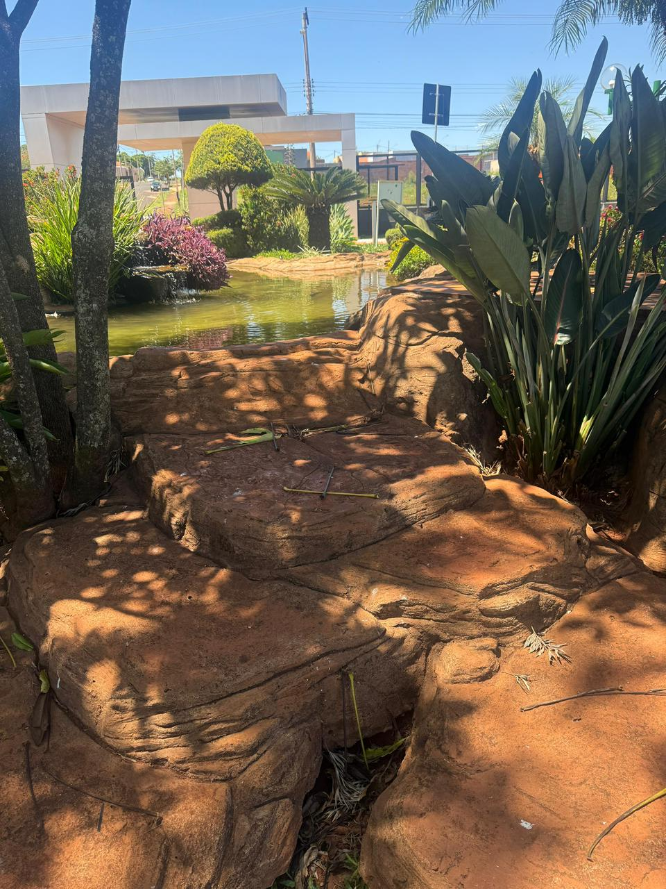
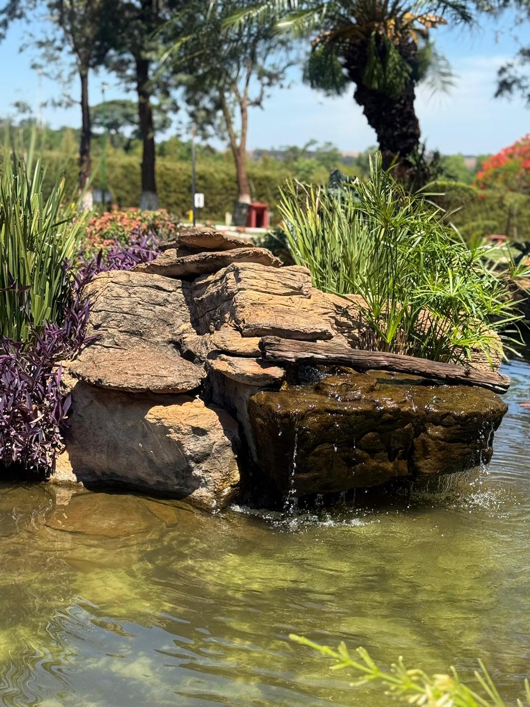
 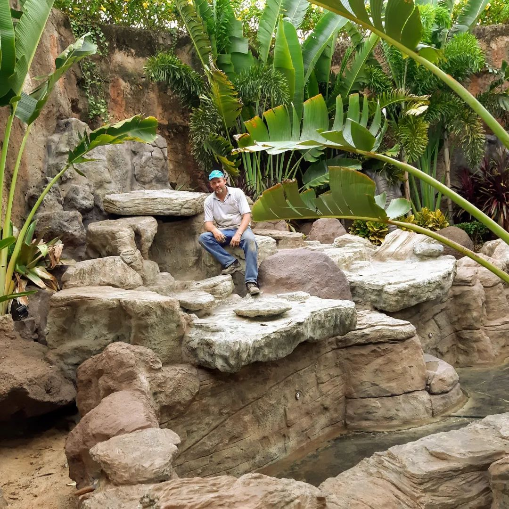
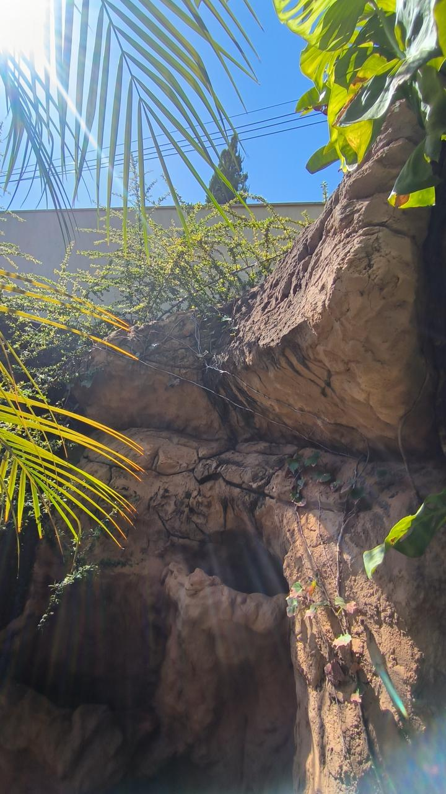
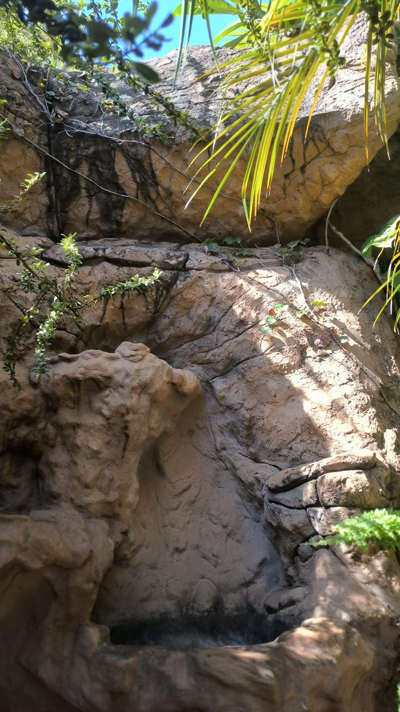
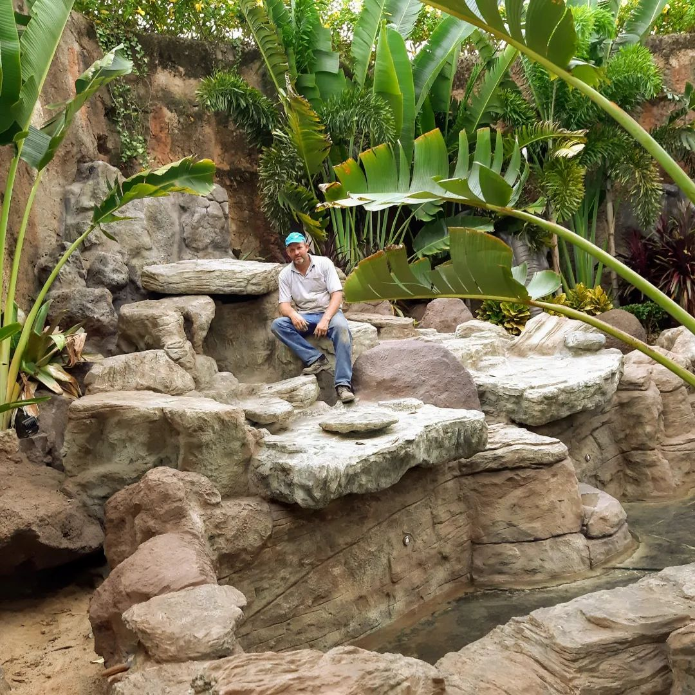
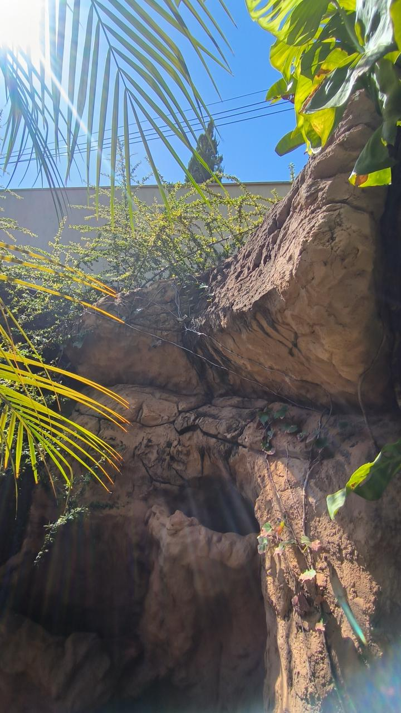
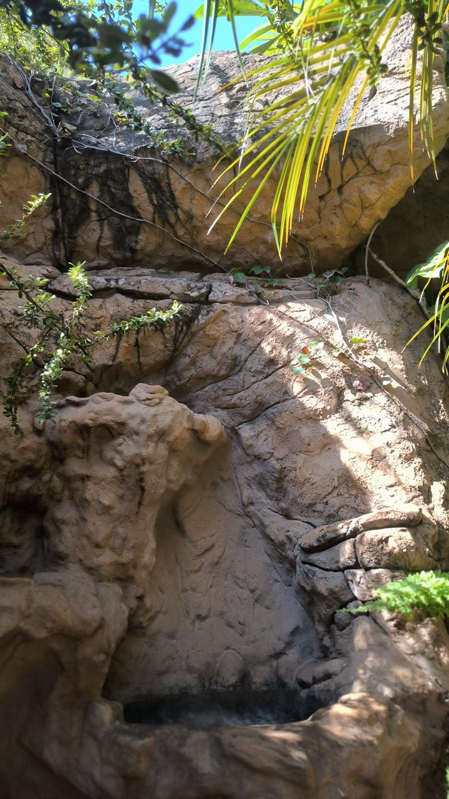
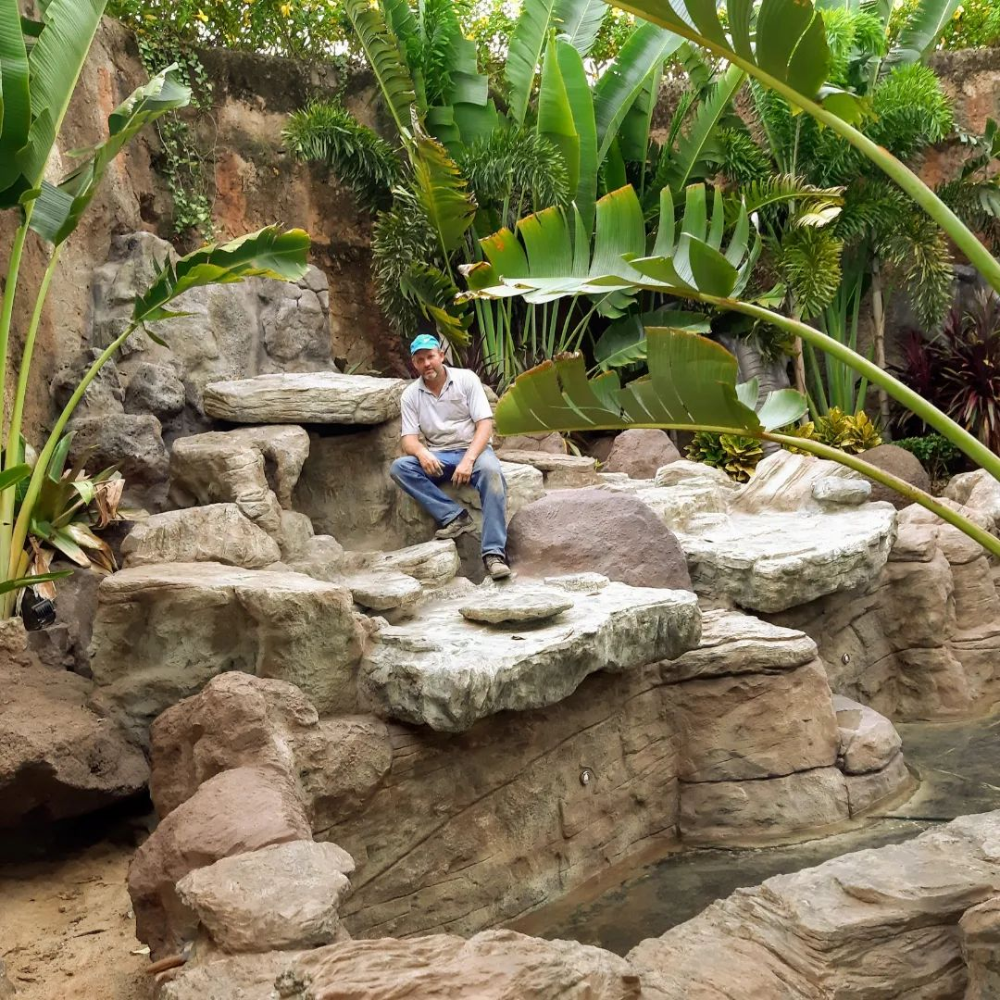
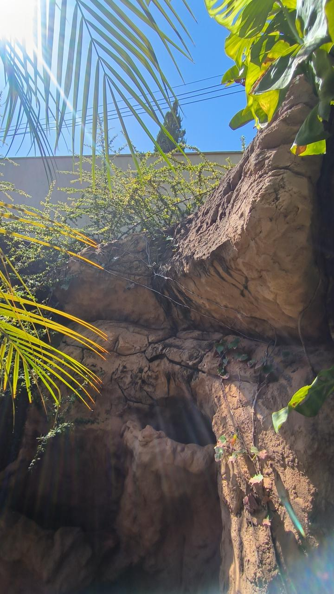
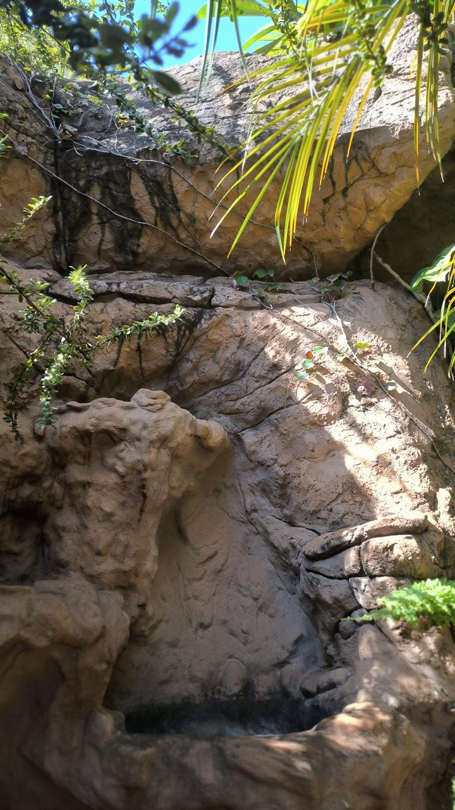
Rochas Artificiais
As rochas artificiais oferecem versatilidade, resistência e beleza estética para composições paisagísticas e decorativas. Produzidas com materiais de alta durabilidade e técnicas que reproduzem fielmente texturas e formatos naturais, proporcionam um visual autêntico e harmonioso em qualquer ambiente. Podem ser personalizadas em tamanho, cor e estilo, atendendo às preferências do cliente e às necessidades do projeto. Ideais para lagos, cascatas, jardins, grutas e áreas externas, as rochas artificiais valorizam o espaço com elegância, funcionalidade e integração perfeita com a natureza.